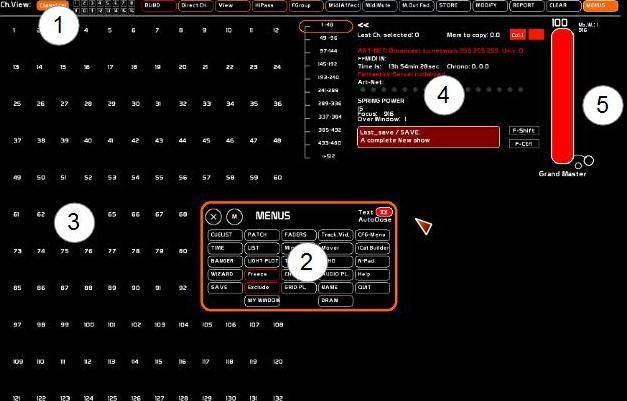
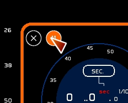
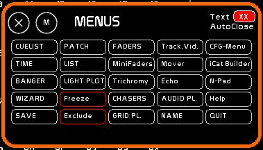

Table des matières
Interface générale de White Cat:
White Cat comprend un tableau de bord qui peut s'étendre sur plusieurs écrans.
En version 0.8.3, un effort a été fait pour simplifier l'espace de travail et l'ergonomie.
Au démarrage, votre tableau de bord se présente ainsi:

Il comprend 6 grandes parties:
- La barre principale, comportant les grandes commandes communes aux différentes fenêtres, et les commandes les plus usuelles
- La fenêtre [MENUS] qui permet l'accès aux différentes fenêtres
- L'espace circuits
- Le retour d'informations ( frappe clavier, infos DMX, midi, art-net )
- L'espace manuel des bangers
- Le grand master
Système des fenêtres
La fenêtre [Menus]
La fenêtre [Menus] va vous permettre d'appeler par un click souris les différentes fenêtres de WhiteCat.
Pour activer la fenêtre [Menus]:
- clicker [Menus] dans la barre tout en haut
ou
- clicker droit sur le plan de travail, la fenêtre menu apparait sous votre souris.
Les différentes fenêtres de WhiteCat
L'espace de WhiteCat est modulable fonction de vos besoins.
Vous pouvez appeler et refermer les fenêtres par:
- la fenêtre [MENUS]
- les raccourcis clavier
- les boutons midi de votre surface de contrôle
Chaque position de fenêtre est sauvée pour chaque spectacle.
Chaque fenêtre peut être fermée ou bougée, via deux icones:
- clicker [X] pour fermer la fenêtre, ou taper la commande d'appel de cette fenêtre
- clicker [M] et rester clické pour bouger la fenêtre de place

Les différentes fenêtres dans WhiteCat
Les fenêtres sont classées dans la fenêtre [Menus] par la logique suivante:
- Séquenciel, manipulations par lots, sauvegardes
- Circuits et actions sur les circuits
- Faders et contenus
- Suite des contenus, AudioPlayers et fonction [Name]
- Configuration et Utiles

Navigation dans les fenêtres
Clicker sur une fenêtre la ramène au premier plan, lui donnant le “focus”. Une fenêtre a le “focus” lorsque son liseré est de couleur orange.

Un système de navigation rapide dans les fenêtres est possible via les touche[Page DOWN] et [Page UP].
La combinaison [CTRL][PAGE DOWN] permet de faire défiler en solo ces fenêtres, avec une position extinction.
Snapshot des fenêtres
On peut garder en mémoire quelles fenêtres étaient ouvertes et toutes les éteindre par la combinaison clavier [SHIFT][IMPR.ECRAN]. On peut rappeler les fenêtres qui étaient appelées par un [CTRL][IMPR.ECRAN].
Remettre par défaut la position des fenêtres
En utilisant un moniteur externe dans votre théâtre, puis en partant en tournée, il est possible que vous ne puissiez plus accéder aux fenêtres sauvées dans l'espace du deuxième moniteur. En ce cas, aller dans : CFG Menus, onglet Screen.
Interactions utilisateurs:
Il y a 6 types d'interaction utilisateur:
La souris ou l'écran tactile
White Cat est prévu pour le tactile ( un point).
Toutes les actions se font donc par le click gauche.
Le Click droit est utilisé dans deux cas de figure uniquement:
- lorsque vous n'êtes pas dans la fenêtre [LIGHTPLOT], il permet d'appeler la fenêtre [MENUS]
- lorque vous travaillez sur la fenêtre [LightPlot], il vous permet de bouger dans l'espace du plan lumière ( ViewPort )
Les menus sont tous prévus pour un fonctionnement au tactile, avec des boutons et des masters adéquats en taille.
Un soin particulier a été apporté à la manipulation souris: les potentiomètres ont donc tous une course de 255 pixels, permettant d'être le plus précis possible.
Le crossfade peut se faire aussi à la souris, avec un ratio permettant un équivalent de la technique du croisé X1/X2 ( le preset part avant la descente de X1).
Un clavier numérique virtuel pour les écrans tactiles est disponible: le Num-Pad.
Le clavier ordinateur
Le clavier permet de travailler très vite via des raccourcis et des combinaisons de touches ( Ctrl et Shift notamment)
Le Midi
Quasiment toutes les fonctions sont pilotables en midi. On peut donc utiliser des surfaces de contrôle comme la BCF2000, l'iControl, des logiciels sous tablette tactile ou iPhone, pour travailler en manuel: séquenciel, masters, roue de couleur, accélérateurs de crossfade, appels des lfos's, boutons divers ….
L'arduino
Un grand nombre de fonctions sont accesibles en discutant directement avec des interfaces arduino ( USB ou RF ). Les interfaces arduino permmettent l'intégration électronique de manière simple et peu onéreuse ( boites à boutons, interfaces personnalisées et futuristes, etc). WhiteCat est fourni avec des scripts pour l'arduino, vous permettant très rapidement de créer une boite à bouton ou de controller des moteurs, des relais, des mini-gradas, etc etc..
Télécommandes type téléphones ou tablettes
La version 0.8.6 fournit une sauvegarde dédiée aux télécommandes, permettant de piloter WhiteCat, que ce soit via iCAT, ou via TouchOSC.
L'iPod/Phone et l'iPad
Boutons et faders peuvent être pilotés par le module iCat, qui s'appuye sur le programme libre et gratuit Fantastick ( voir AppStore).
iCat intègre la communication de manière très poussée: vous pouvez en direct reconfigurer et personnaliser votre espace de travail.
Le module iCat permet un contrôle type télécommande ( réglages, correction en salle), ou des contrôleurs additionnels ( faders, séquenciel). Le module DRAW est à explorer, puisqu'avec un iDEVICE et DRAW vosu pourrez dessiner, effacer, suivre avec des sources traditionnelles, bref peindre à la volée vos états lumineux.
Android
Sous Android, il faudra se tourner vers Touch OSC. La communication n'est pas en aller-retouor entre White Cat et Touch OSC.
L'art-net et Banger
WhiteCat peut recevoir du dmx par éthernet. En utiisant les channels macros et Banger, le gestionnaire d'évènements, vous pouvez asservir puissament WhiteCat depuis un autre jeu lumière.